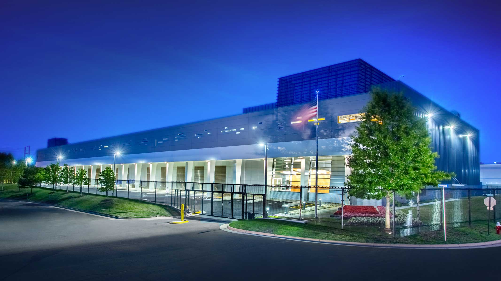

Ashburn
Introduction
Ashburn is known for its suburban charm and has become a prominent hub for technology, data centers, and various industries in recent years.

·Location
Ashburn located in Loudoun County, Virginia, in the United States.
·Technology Hub
Ashburn has earned the nickname "Data Center Alley" due to its concentration of data centers and technology companies. It hosts a significant portion of the world's internet traffic and is a critical part of the global internet infrastructure.